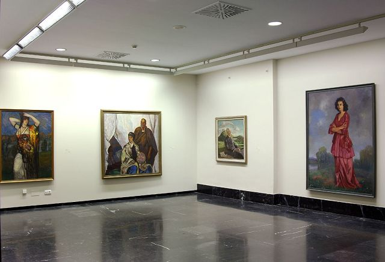
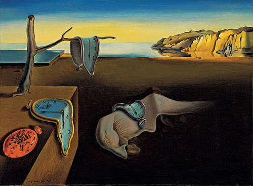
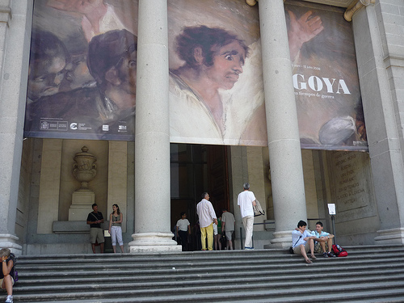
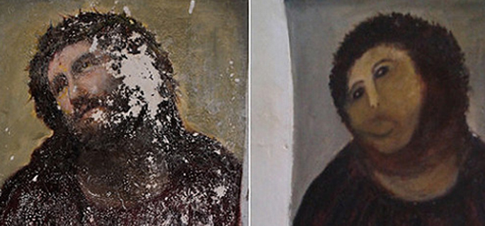

De 9:30 a 10:30
Acto comprendido
dentro del programa generaciones.
Ponente:
Dª Estrella
de Diego

De 10:30 a 12
Reflejo de la
Belleza Absoluta a través de las leyes de la armonía y de las
proporciones matemáticas.
Ponente:
D. Pedro Martín
Profesor
del IES Luis Vives

De 12:30 a 13:30
Exposición:
Grandes maestros de la pintura. Goya.
Ponente:
Técnico
del Museo del Prado

De 13:30 a 14:30
Charla - taller:
Restauración de obras de arte.
Ponente:
Dª Carmen Cueto

Javier de Diego Navarro ©2013-2014